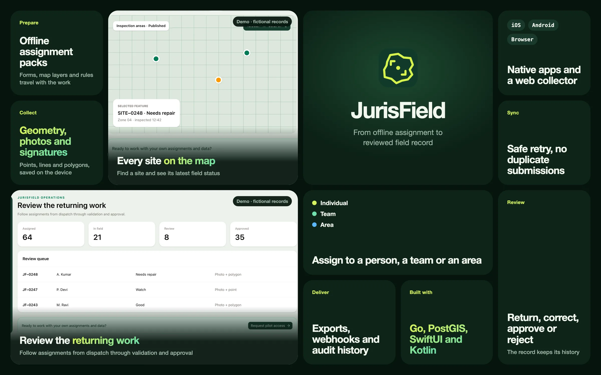

JurisField / Field operations
From offline assignment to reviewed field record
I built JurisField for field teams that need to record what happened at a specific place, even without a connection. When the work comes back, reviewers can see the assignment and evidence together.
Working web and mobile product with a public demo
Visit JurisField ↗
The story
Why I built it.
I started JurisField in July 2026 around a practical problem. A field worker needs the map and form before losing coverage, and the office needs enough context to review what comes back. I built the work around the assignment. It goes out with the relevant layers and rules, and the collected evidence comes back attached to it. In about a month I had a first version that covered the workflow from the web portal through the backend and native phone apps. I tested the system on physical Android and iOS devices as well as on the web.
The problem
What it solves.
An inspection can start with an assigned work area and end with a form, a GPS shape and several photos. Those records need to stay tied to the assignment, including when the inspector has to finish the work offline.
Who it’s for: Field staff, supervisors and reviewers working across defined jurisdictions.
Workflow
How JurisField works.
- 01Set up an assignmentPublish a form and map layers, then assign the work to a person, team or area.
- 02Collect in the fieldDownload the work pack and capture answers, geometry and evidence offline.
- 03Review after syncInspect the submission in context and return, correct or approve it with its history intact.
Engineering
Decisions and limits.
I package the relevant forms, map layers and rules with the assignment for offline use. The app saves drafts locally and queues submissions for synchronisation. A retry can send the record again without creating a duplicate.
The web and mobile apps are working. The public demo is read-only and uses fictional records.
My role
What I built.
I built the web portal, backend and both native mobile clients and handled deployment and testing myself.
- First end-to-end version built in about a month
- Native iOS and Android clients and a browser collector
- Offline drafts and downloadable assignment packs
- Field photos with configurable evidence policies
Angular · Go · PostGIS · MapLibre · SwiftUI · Kotlin